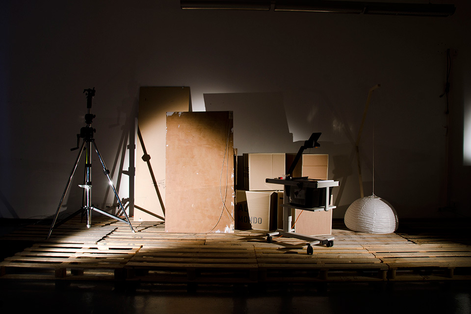

Directors: Isacco Chiaf - Anke reister
Voice: Gianluca Iocolano
Music: Edoardo Chiaf
Subtitles: Simone Brioni

Made in Italy (behind the scenes), is a visual performance, which gather a series of investigations carried out by different media outlet and research center.
A show that is developed in a hypothetical “”behind the scene, a narrow place where objects take shape and color contrasting the dark environment, pointing a spotlight on Italian’s involvement in the trafficking of small arms.
Italy is in fact the European leaders regarding this obscure practice.
As soundtrack, the music of Edoardo Chiaf, musician who has been working several years in the field of experimental music for theater performances.
Directors: Isacco Chiaf - Anke reister
Voice: Gianluca Iocolano
Music: Edoardo Chiaf
Subtitles: Simone Brioni